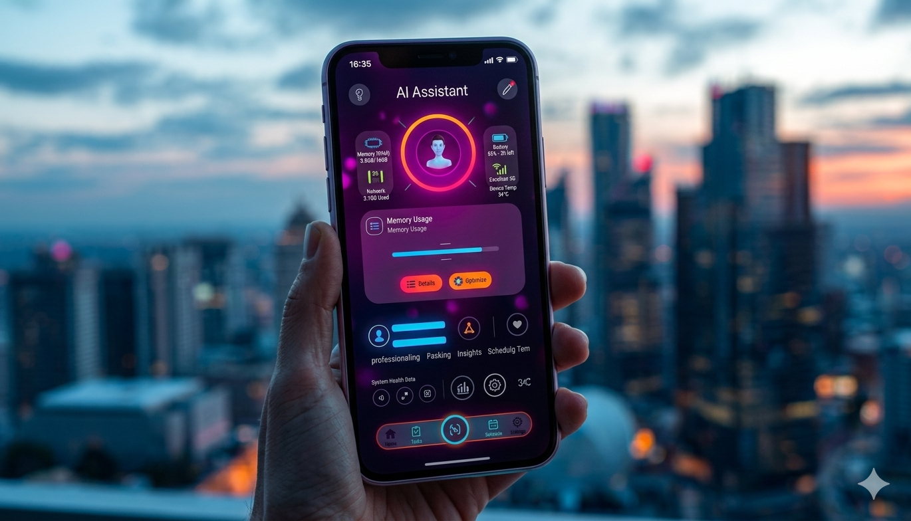

Hur Används AI Just Nu?
Idag har AI lämnat forskningslaboratorierna och blivit en integrerad del av vår vardag. Vi lever i ett samhälle där algoritmer driver många av de tjänster och system vi använder dagligen.

I Vardagen (Konsumenter)
När du öppnar din telefon med ansiktsigenkänning är det ett neuralt nätverk som verifierar dig. När du lyssnar på musik på Spotify styrs rekommendationerna av AI. Språkmodeller som ChatGPT (baserad på GPT-teknologin) används dagligen av miljontals människor för att svara på frågor, skriva texter, analysera data och översätta text på en nivå som ofta liknar mänskligt språk.
Smarta assistenter som Siri och Alexa använder också maskininlärning för att förstå och tolka tal i realtid.
I Samhället och Industrier
Bortom konsumentprodukter är påverkan ännu större:
- Sjukvård: AI analyserar nu röntgenbilder och MRT för att identifiera cancer och andra sjukdomar betydligt snabbare och ibland mer träffsäkert än mänskliga läkare. Den används även för att upptäcka nya läkemedelsmolekyler.
- Transport: Självkörande bilar (ex. Tesla) analyserar videoströmmar i realtid med AI för att fatta sekundsnabba beslut kring styrning. Dessutom använder logistikföretag AI för att optimera rutter och spara enorma mängder bränsle.
- Finans: Aktiemarknaden domineras av algoritmer och AI används av storbanker för att omedelbart flagga och blockera misstänkta transaktioner för att stoppa bedrägerier.